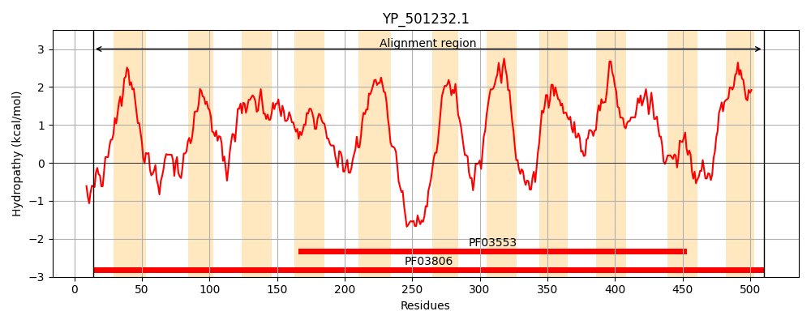
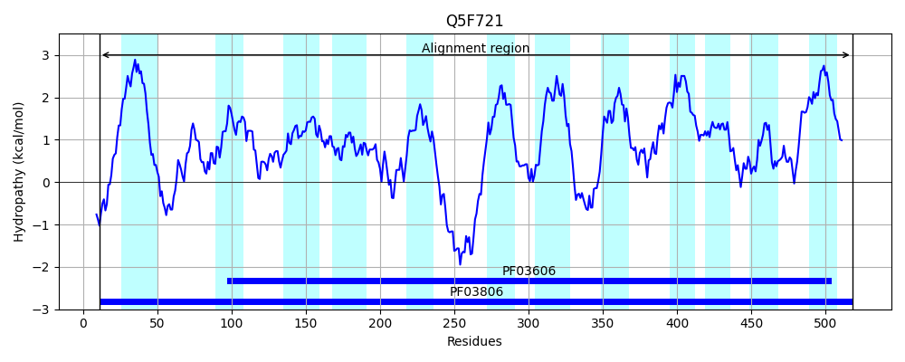
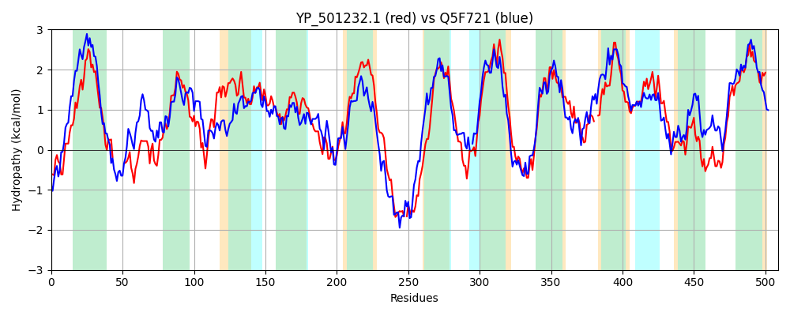

Hit Accession: Q5F721
Hit TCID: 2.A.68.1.2
Hit Description: gnl|BL_ORD_ID|14338 gnl|TC-DB|Q5F721|2.A.68.1.2 Antibiotic resistance efflux pump component - Neisseria gonorrhoeae (strain ATCC 700825 / FA 1090).
Mach Len: 509
e:0.000000
Query TMS Count : 11
Hit TMS Count: 12
TMS-Overlap Score: 7.700000
Predicted Substrates:CHEBI:23888;drug
BLAST Alignment:
Score: 945 , Bit scores: 368 bits, E-value: 1.7e-122, Alignment length: 509, Percentage identity: 38
Query: 14 RFLNSVEKIGNKLPDPSVLFFLMCVGLAIMTWVISLFNVSVKHP--------GTHQTIYIKNIISHDGFTMIMNDTIKNFSEFPALGLVLAVMIGIGVAEKTGYFDKLMISVVNRAPRFLILPTIILIGILGSTAGDAATIILPPLAAMLFIKIGYHPIAGLTMAYASAVGGFAANIVVGMQDALVYSFTEPATRIVSDSIKTNVAMNWYFIAASVVVLLPTILLVTTKLIIPRLGKYDDSLMHDDHE-ETSSHITDKEAHALKWANISFIVTIILLIITAIPEHSFLRNAKTGSLLDDAPLINGVGLIILVVFLVPGLVYGILSKEIKNTKDLGKMFGDAVGSMGTFIVIVFFAAQLLAYLKWSNLGIIAAVKGAKLLEH--QNGIVLILGIIVLSAMVNMLIGSASAKWGILGPIFVPMLILIGFHPAFTQVIYRVGDSITNPITPMMPYLPLLLTYAQKYDKRMKLGALLSSLMPYSIALSIVWTVFVIIW-FLLGIPVGPGGPIF 510
RFL +VE +GN LP P LF + V L I + V + F +SV P I++ +++ DG I+ T+KNF+ F LG VL ++G+G+AEK+G LM ++ ++PR L ++ GIL +TA + ++L PL+A++F +G HP+AGL A+A GG++AN+ +G D L+ T+ A +I+ NW+F+AAS V+ VT K++ P+LG Y L ++ + S+ IT E L WA + F+ LL + +P LR+ +TG L+ +P + + + I ++F +PG+VYG +++ ++ +++ +++ ++G ++VI+FFAAQ +A+ W+N+G AVKGA L+ G VL +G I++ A +N++IGSASA+W + PIFVPML+L G+ P Q YR+GDS+TN ITPMM Y L++ KY K +G L+S ++PYS I W IW F+LG+PVGPG P F
Sbjct: 11 RFLRTVEWLGNMLPHPVTLFIIFIVLLLIASAVGAYFGLSVPDPRPVGAKGRADDGLIHVVSLLDADGLIKILTHTVKNFTGFAPLGTVLVSLLGVGIAEKSGLISALMRLLLTKSPRKLTTFMVVFTGILSNTASELGYVVLIPLSAVIFHSLGRHPLAGLAAAFAGVSGGYSANLFLGTIDPLLAGITQQAAQIIHPDYVVGPEANWFFMAASTFVIALIGYFVTEKIVEPQLGPYQSDLSQEEKDIRHSNEITPLEYKGLIWAGVVFVALSALLAWSIVPADGILRHPETG-LVAGSPFLKSIVVFIFLLFALPGIVYGRITRSLRGEREVVNAMAESMSTLGLYLVIIFFAAQFVAFFNWTNIGQYIAVKGAVFLKEVGLGGSVLFIGFILICAFINLMIGSASAQWAVTAPIFVPMLMLAGYAPEVIQAAYRIGDSVTNIITPMMSYFGLIMATVIKYKKDAGVGTLISMMLPYSAFFLIAWIALFCIWVFVLGLPVGPGTPTF 518 | Protein Hydropathy Plots: |
|---|
|  |  |
Pairwise Alignment-Hydropathy Plot:
|
|---|
|  |